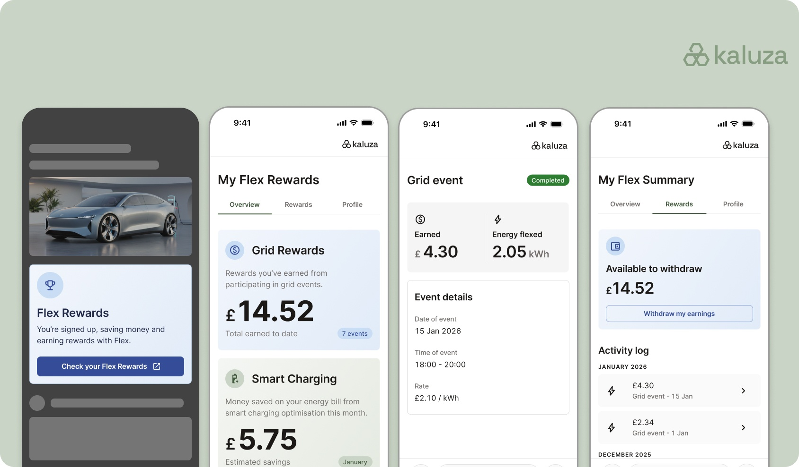

Company and dates: Kaluza · Dec 2019 – Present
Shaping product experience design at a global energy intelligence platform
Kaluza is an intelligent energy platform powering major utilities worldwide, including AGL, Shell Energy Australia and ENGIE, across billing, customer care, energy optimisation and electric vehicle smart charging.

The context
Kaluza was spun out of OVO Energy to build a next-generation SaaS platform so energy companies can make a cleaner, smarter system work for everyone. In recent years the business has grown rapidly and was ranked number one for innovation in the 2025 Frost & Sullivan Radar for Digital Platforms in Energy Utilities. In 2024, following an AU$150m investment from AGL, one of Australia's leading energy companies, Kaluza's valuation reached $500m.
My role
As Lead Designer and then Head of Design, I have been part of Kaluza's journey from start-up to global scale-up, leading the experience vision across a complex, multi-product platform and ensuring design was central to product strategy from earliest ideation through to scaled delivery across multiple international markets.
What I did
Experience vision and product strategy
A key part of my role has been ensuring design is involved in product strategy from the earliest stages. This means working with Product and Engineering peers to define the right problems to solve, participating in client product forums to align on roadmap and strategy, and helping establish continuous research sessions with retail operational users to ensure platform decisions are grounded in real user needs.
Scaling the team
I've grown the UX team from 5 to 25+ practitioners, securing investment for new roles and managing hiring across the UK (Bristol, London, Edinburgh), Portugal and Australia. The Australian Lead Designer reported directly to me, and the team has since grown to three designers in Melbourne.


Creating the conditions for design to thrive
As the platform has expanded into multiple client markets and geographies, I built the operational structures to keep our distributed team aligned, effective and motivated. This included a centralised UX delivery roadmap, weekly design ceremonies and critiques, and cross-functional alignment sessions. I improved how design and research activity was made visible to senior leadership through better reporting and making sure design work was linked to business and user outcomes.
In creating Kaluza's UX Career Framework and Skills Map, I standardised job titles and expectations across the function. I also managed the team's learning and development budget, ensuring opportunities were allocated equitably.
I've supported several team members into senior and Lead roles during my time at Kaluza, developing people through clear goals and OKRs, continuous feedback, and encouraging the deep cross-functional relationships that build trust and stretch their impact.
Launching an Enterprise Design System
In 2024 I defined a new strategic direction for our design system and led its relaunch. It began as a component library for building end-consumer energy account experiences on the web and in apps; I broadened it into an enterprise-grade system that now underpins accessible, consistent, high-quality experiences across the full breadth of our products. This extended its reach into retailer operations and customer care, supporting richer CRM and commerce capabilities and increasing the value of the platform for our clients. I presented the relaunch at the company-wide Kaluza Conference, establishing the design system as a foundational enabler for consistent experience quality as the platform scales.
AI design strategy
At Kaluza, we've invested in building the skills, tools and mindset needed to work practically with cutting-edge AI in ways that are effective, efficient and ethical. From prototyping with natural language prompts to piloting Model Context Protocol assisted workflows that bridge the gap between design and code, AI is changing how we work and expanding what's possible for our team and our products.
Kaluza product areas
Customer Care
Customer Care is Kaluza's AI-powered, award-winning solution purpose-built for energy retailers. Recognised at the 2026 Amazon Connect Customer Innovation Awards, Kaluza Customer Care gives agents one interface for billing, tariffs and live energy data, combined with AI-driven subject and sentiment analysis.
The design goal was to create an embedded integration with Amazon Connect to deliver a contact centre with deep energy expertise built in. Background AI handles contact summaries and case updates, so advisors can focus on the customer, not the admin. Trained on historic case data, it automates the most likely fixes, getting faster over time, so that customers get resolutions sooner.
"With Kaluza, we're not just upgrading our digital infrastructure. We're fundamentally reimagining how energy is delivered and experienced."
Flex for OEMs
Connected devices, such as EVs, home batteries and smart appliances, can become active participants in energy flexibility markets, without customers needing to switch supplier. Millions of these devices are technically ready, yet take-up stays low: in the UK only around 35% of EVs participate in flexibility markets. The barrier isn't the hardware or the markets, it's the customer experience, which puts design at the heart of the problem. Because device makers own the purchase journey and the ongoing customer relationship, the opportunity was to strip out friction and make the value of flexibility clear from the moment of purchase through to direct-to-bank rewards.
One of the ways I've helped speed up prototyping was making sure a Figma and Claude Design assisted AI workflow, combined with our design system, enables teams to turn concepts into working, interactive prototypes in days rather than weeks. This lets them test and communicate propositions with stakeholders and clients early, and gives engineering a clear, consistent reference to build from.

Ensuring experience quality while delivering for multiple clients in different markets
As Kaluza has extended rapidly across multiple clients and markets, the pressure to meet tight delivery milestones can create a tension with design quality. This has led, on occasion, to front-end implementations not matching approved designs, accessibility standards being inconsistently met and agreed iterations pushed out of scope.
I engaged with Product and Engineering leadership, framing this not as a UX team problem but as a shared delivery challenge around six specific asks:
- Treat the UX Definition of Done as a formal release gate
- Put accessibility and UX quality onto delivery roadmaps
- Adhere to a collaborative designer-to-engineer handover process
- Address the front-end quality gap created by the move to full-stack engineering
- Support on removing any client-side barriers to user research
- Model the right language and culture around design work at a leadership level
By getting buy-in from the senior leadership team, we could move forward with a shared UX quality framework and named accountabilities across functions.
Beyond the immediate quality framework, I have also been raising the bar more broadly: I have worked on defining fitness tests and module standards across accessibility, internationalisation, experience consistency and behavioural analytics, ensuring experience quality scales as Kaluza onboards new retail clients. I am also a key stakeholder in the development of an AI-first insights repository and centralised journey management system, so that decision makers can identify opportunities that unlock business value.
Making difficult decisions and managing strategic risk
A key part of my role is striking the right balance between keeping delivery teams staffed and supporting pre-sales activity to win new business. I run a weekly design allocation and prioritisation session with Lead Designers to manage these decisions, keeping senior stakeholders informed of trade-offs and priorities.
I also look beyond the immediate delivery horizon to identify risks others may not yet see. For example, when I recognised that critical product domain knowledge was concentrated in individual Product Managers with no clear documentation strategy in place, I escalated it as a company-wide risk. The result was a funded documentation site programme, a new Technical Writer hire and a more standardised approach to client-facing docs across the business.
"Paul's strategic vision and organisational design have significantly contributed to the success of Kaluza. His data-driven approach, ability to identify market opportunities through competitive analysis, and passion for the design craft made him an invaluable part of the team."
Outcomes
My team's work is central to the company goal of delivering for our clients in the EU and Australia while building a scalable platform. We've completed the majority of global core features, with many journeys designed, built and released. This enables the large scale migration of customer cohorts onto our platform. We've instrumented behavioural analytics across journeys, generating insights and driving more product centric delivery so the platform can be continuously improved and iterated.
-
First-contact resolution
-
In total handling time
-
In technology cost savings
-
Data points processed daily
-
Frost & Sullivan innovation ranking, 2025
-
countries with Kaluza products deployed